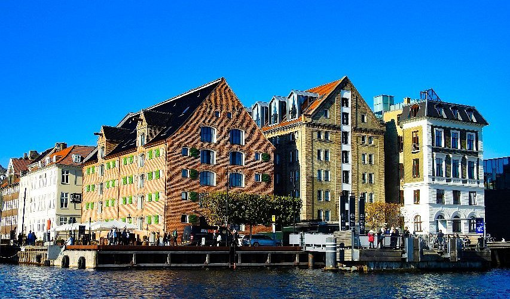
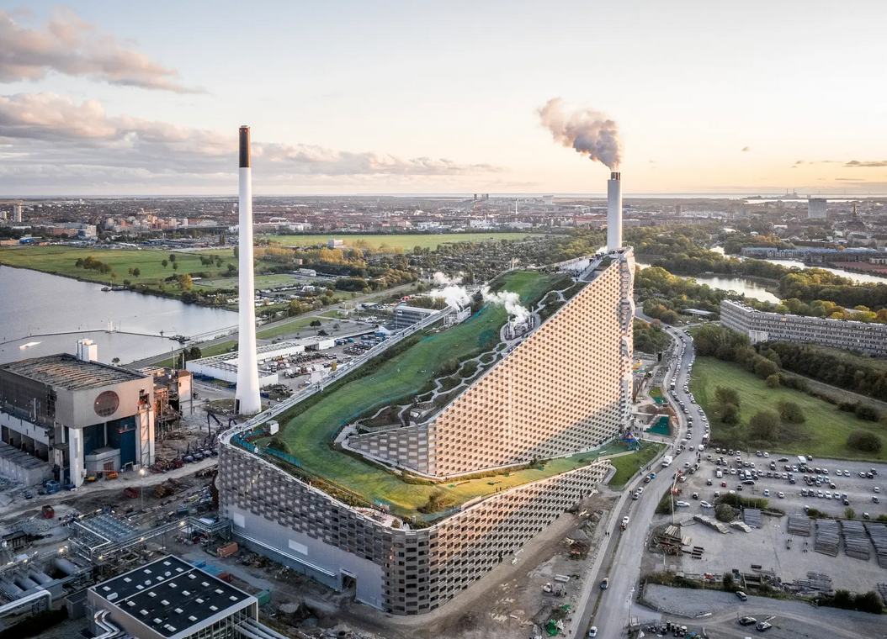

Zealand & The Capital
The heart of Denmark, where the capital's cosmopolitan energy meets the dramatic cliffs of the coastline.

Tivoli Gardens
One of the world's oldest amusement parks, a magical oasis right in the city center.

Nyhavn
Iconic 17th-century waterfront with colorful townhouses and historic wooden ships.

CopenHill
A waste-to-energy plant with a ski slope on its roof—pure Danish innovation.